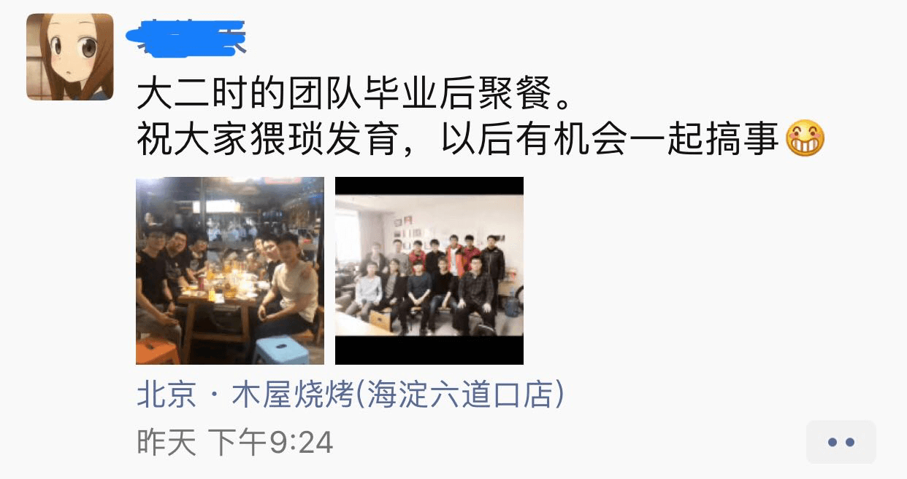

这个中秋，除了贺卡月饼，还有什么呢？
每逢佳节倍思亲
9102年中秋，与几位兄弟相聚。在异乡能有几位如此的哥们，甚是幸事！明金的手艺还是可以的，四个人风扫残云之势将一桌菜收刮得干干净净。来来来，干了这杯还有三杯！只是此番相聚，少了大头等人，深感遗憾。祝愿几位二战兄弟成功上岸，来日一起把酒言欢！
十五月亮十六圆
翌日，与本科创业团队相会与六道口，阔别一年，如今大伙儿已然都驰骋职场，相聚于此甚是不易。Y在腾讯，H去了移动，C仍在头条，M学弟微软实习还未结束，已有出国深造打算，L师哥跳槽去了小米。只有我“苦哈哈”的仍在学习。祝愿诸君，日后都成为各界翘楚，继续引领风骚！

听君一席话
“房子不是关键问题，关键问题在于，你想清楚选择哪座城市作为你的起点没有。”L师哥如是说。
我一直认为，北京这座城市可以作为我的一个跳板，无论今后是留在京城，或者回南方、回老家发展，这看起来都是一个不错的选择。但是师哥一番话改变了我这个想法。
“当你确定好从哪里开始后，一切都会如水到渠成一般顺利。”
若非如此，你会总陷入进退两难的境地，没有一个目标你可以知道从何开始，但却不知何处是你的梦想之地。
“当你确信并且坚定自己将在这里开始，你才会去深入了解这座城市，去感受它，拥抱它。这种感觉很重要，你如果心不在此，你会遗漏许多重要的信息。”
归属感，我一直说北京这个地方冷冰冰的，没有给我太多感觉。自从本科毕业之后，周边一票朋友散去，孤寂感尤甚，这可能是我南归念头的起因之一吧。另一方面，户口、房价、上一辈以及更远的下一代，当考虑到这些问题之后，方方面面的反馈更是加深了退缩的想法。
“很多问题你想太远，看得太重。你的人生才刚刚开始，若是背负上这么沉重的包袱，如何能远行？你起码有10年，甚至20年的时间，去为你的未来奋斗。你父母也肯定不希望在你最需要奋勇争先的时候因为这些事而拖缓脚步。”
这让我想起一个TED演讲： 你为何不会成就伟业。很多顾虑的事只是怯懦的借口，没有那份魄力和决心去放手一搏，而后还将原因归结为“不得不，没办法”。但是事实是实际情况远没有想象之中那么坏，你做不做这件事，与你在另外一件事上完成得很好，并不是互斥的，两件事之间总会有互容的局面，然而很多人在想到这个局面前便已经放弃。
“你要做的，其实只需要想清楚自己真正想要的是什么，然后全心全意地为之努力。”